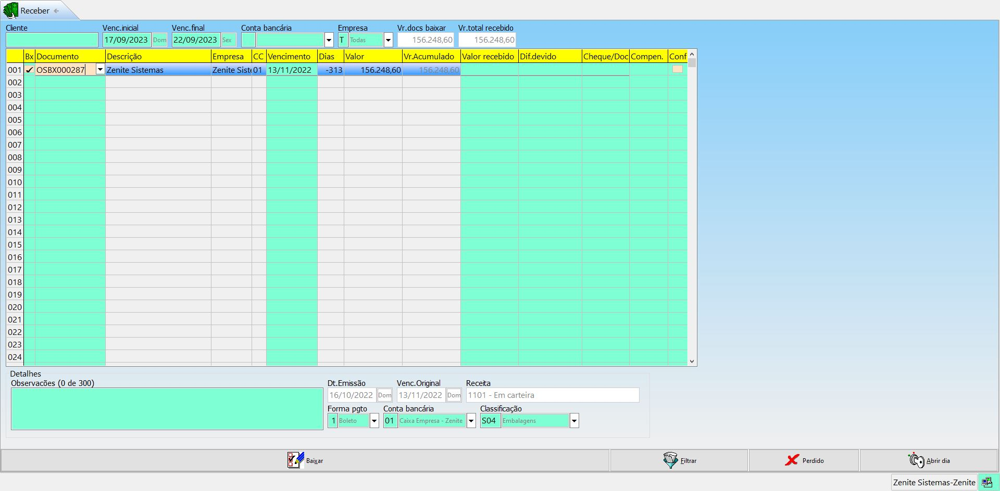

( Título = Registro no CR )
( Liquidado = Pago )
Numeração {
- Se o CR for gerado a partir de uma NF, o número do registro será o mesmo da NF.
- OSBX = Corresponde ao número da baixa das OSs
- CM = Contas a receber gerado manualmente
- VB (Venda balcão) = Gerado a partir de uma venda balcão
- CRU (Contas a receber unificada) = Quando as contas a receber de um cliente são unificadas.
}
F11-Outras opções
Arquivo cheques pré: Exibi todos os cheques pré-datados cadastrados no sistema.
Perdido por data: O sistema dará como perdido todos os títulos atrasados com a data limíte expirada.
Canc.comissões aberto: Cancelará todas as comissões em aberto até uma data limite.
Sintetizar por ano: Transforma todos os títulos de um cliente em 1 só.
Menu inferior
Abrir dia: Permite abrir um dia que já foi fechado para dar baixa e estornar valores de dias que já tenham sido fechados.
Estornar: O sistema irá desfazer a liquidação do título e a movimentação bancária.
Emitir recibo: Usado para imprimir recibos de pagamentos
Carta(s) cobrança: Usado para filtrar clientes devedores e gerar cartas de cobrança em .PDF na pasta "documentos"
Unir: Permite unir títulos do mesmo cliente, desde que eles tenham o mesmo comissionado. Títulos unidos terão o código "CRU" no início do novo título e os demais títulos usados na união serão excluídos.
Imprimir boleto: Irá gerar o boleto do título selecionado.
Cancelar: Irá cancelar o título do CR, desde que não esteja liquidado.
Incluir

Documento: Número do documento
Tipo doc:
- NF município:
- NF estado:
- Baixa de OS (CR gerado a partir de uma baixa de OS)
- Pedido (CR gerado a partir de um pedido)
- CR manual (CR gerado manualmente)
- Balcão ()
N° Lanç.Doc: É o número do lançamento (sequencia) do documento mencionado no campo "documento"
Empresa: Empresa que receberá o pagamento
Cód.cliente: Indica o código do cliente que fará o pagamento
Dt.emissão: É a data de lançamento da NF.
Venc.original: Vencimento original
Vencimento: Irá prevalecer à data de vencimento original.
Rel.ABC: Define se o título fará parte da análise da curva ABC (Sim = Em branco).
Fluxo cx: Define como e se esse título será representado no fluxo de caixa.
Valor original: Valor original da NF, antes do desconto, adiantamento e retenção de impostos
Desconto NF: Desconto aplicado na NF
Adiantamento: Adiantamento usado na NF
Imposto retido: Imposto retido na NF
Valor IPI: Valor acrescentado na NF
Acréscimos | Descontos: Irão interferir diretamente no valor do CR
Valor: Valor final do CR
Atraso: Atraso médio desse título
Juros calculado: Calcula só juros diário do atraso do título. (CADASTROS > CONFIGURAÇÕES GERAIS > FINANCEIRO > "%multa" e "%Juros/mês")
grade O sistema nunca irá somar o valor do atraso no campo de acréscimos
grade As taxas de juros e multas não irão variar de banco para banco, elas são padrão da gráfica
T.Cobrança: Inclui um tipo de cobrança padrão (CONFIGURAÇÕES GERAIS > FINANCEIRO > "Tabela tipo cobrança"). Só tem efeito após reiniciar o sistema.
- Banco descontada (Usado em factoring) - (FINANCEIRO > CONFIGURAÇÕES GERAIS > FINANCEIRO > "Tabela tipo financeiro") = Os checkbox indicam se os lançamentos do respectivo tipo serão lançados nas movimentações bancárias.
grade No caso do factoring o usuário deverá lançar o valor total na movimentação bancaria com o tipo "banco descontada" e depois gerar uma saída como tipo "juros desconto de duplicidade" com a diferença do valor recebida
Conta bancária: Conta bancaria padrão que receberá o pagamento. (CONFIGURAÇÕES GERAIS > FINANCEIRO > Cód. Conta padrão)
Receita pl.contas: Defini o plano de contas que receberá o valor.
Forma pgto: Não irá alterar o tipo de cobrança.
Obs.acr.descontos: Pode ser preenchida manualmente ou a partir da baixa do título do CR.
Nr OS(s): Indica a OS do título
Cont.marginal: Indica a contribuição marginal da OS
Liquidado: Indica se o título está pago ou não, cancelado ou perdido (não recebeu e nunca receberá)
grade Ao cancelar uma NF, o título no CR também será cancelado automaticamente
Dt.liquidação | baixado por: Quando e quem liquidou o título
Bx.parcial: Indica se houve um pagamento parcial e acrescenta uma letra no final da numeração (indicando a baixa parcial)
Classificação: Segmentação do título
Conferido: Indica se o título foi conferido
Dt.liquid | Baixa | N°Lanc.CP: Serão lançados assim que o CR for baixado.
Observações: Serão visualizadas nesse menu, na tela da baixa do CR ou em relatórios.
Cheques pré-datados: Permite cadastrar cheques pré-datados recebidos.
Baixar/Filtrar

grade Títulos retroativos com mais de 30 dias, não serão lançados no sistema nem estornados. O layout pode ser alterado.
A primeira linha da página é usada para filtrar os títulos que aparecerão na tabela para serem baixados.
Abrir dia: Permite abrir um dia que já foi fechado para dar baixa e estornar valores de dias que já tenham sido fechados.
Valor pago: Sempre que o valor pago for diferente do total do título, o valor a ser pago deverá ser informado aqui.
Dif.devido: Deverá ser indicado o motivo da diferença de pagamento.
Cheque/Doc: Indica um número do documento que será baixado
Compen: Define se o título será compensado ou não. Lançamentos não compensados ficarão na segunda tabela das movimentações bancárias.
Observações: Serão apresentadas dentro do próprio título.
Imprimir autorizações: Permite imprimir os títulos que forem autorizados
Cancelar: Cancela o título do CP
Filtrar: Fará uma busca baseado nos filtros aplicados
Perdido: Definirá os títulos marcados como perdido. Essa ação não pode ser desfeita.